Use a fine-grained token for Den1ed3/xpz with Contents read and write. It stays in this tab. Create a token on GitHub
Select a completed .dem from your Dota 2 replays folder. You can also choose a parsed match JSON.